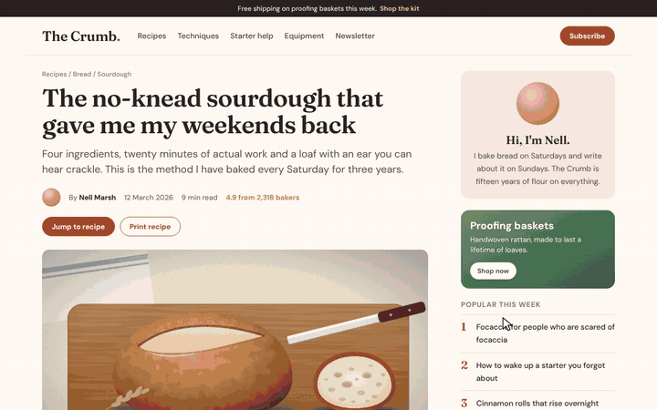

RUGPULL: A Peer-to-Peer
Exit Liquidity System
Abstract. Every website is a memecoin now. We propose a system in which any page can be launched as a coin in one click, traded by clicking its words and rugged with one key, without wallets, chains, servers or money of any kind. The ticker comes from the site's own name, the buyers are named after the words on the page, and the bonding curve fills up whether anyone is watching or not. When the developer pulls the liquidity, every word, picture and button on the screen falls into a pile. Pressing Esc issues a full refund: the page flies back together exactly as it was. The system is a parody, and nothing leaves your browser.
Click words to buy them, press R to pull the rug and Esc to get everything back. To run it on any website, drag the dashed button to your bookmarks bar. Or try it on a baking blog.
1. Introduction
Launching a coin used to take an afternoon: a meme, a ticker, a website and some nerve. Most launches still ended the same way, with a chart that went up, a developer who sold and a lot of people holding the bag. RUGPULL keeps the ending and skips everything else. The website you are reading is already a meme with a name, so it only has to be listed.
What has been missing is a rug pull that hurts nobody, and a way to get the website back afterwards. This paper describes both.

2. Launches
A coin is named after the site's name if it has one, otherwise after its address, otherwise after its title. The Crumb becomes $CRUMB and the.internet becomes $INTERNET. A name too long for a ticker keeps its initials or loses its vowels, so news.ycombinator.com trades as $YCMBNTR. The price starts at a fraction of a cent, and a short history is made up so the chart has something to show.
3. Trading
A trading panel opens with the price, the candles, the market cap, the holders, the volume, the liquidity and a bonding curve. Click any word on the page to buy it: it lights up in gold and a receipt floats up. The crowd keeps buying too. Their words light up in green, and every buyer in the feed is named after a word from the page, such as sourdough.eth or degenflour. While the coin is live, links and buttons on the page do nothing; a click is always a buy.
4. The rug
Press R or the red button, or simply wait: when the bonding curve reaches 100%, the developer pulls the rug for you. The price falls more than 99% in half a second, the dead cat bounces once, and every word, picture and coloured box on the screen falls to the bottom in a pile. A card with the damage comes up, ready to save as a PNG.
P(t) = P0 eμt + σW(t) · 0.003[t ≥ trug](1)
5. Refunds
Press Esc on the card and the pile flies back into place, piece by piece, and the page underneath is switched back on. Nothing was ever rewritten. The words were copied onto a canvas, the page was hidden with one stylesheet, and the bought words were highlighted by the browser on top of the text, so the page comes back exactly as it was, down to the pixel.
6. Installation
All four ways run the same single file.
- Bookmarklet. Drag the dashed RUGPULL button above to your bookmarks bar (no bar? Ctrl Shift B, or ⌘ Shift B on a Mac), open any website and click it. Works in Chrome, Edge, Safari, Firefox, Arc and Brave.
- Chrome extension. Download the repository as a ZIP, open
chrome://extensions, switch on Developer mode, click Load unpacked and pick theextensionfolder. Then click the icon or press Alt Shift R. - Console. Paste the contents of
rugpull.min.jsinto the DevTools console on any page. - Userscript. With Tampermonkey or Violentmonkey, open the raw userscript and press Alt Shift R on any page.
7. Controls
| Input | Effect |
|---|---|
| Click a word | Buy it |
| B | Buy a random word on the screen |
| R | Pull the rug |
| S | Save the card as a PNG |
| M | Sound on or off |
| Esc | Refund everything and close |
8. Privacy
There is no coin, no wallet, no chain and no server. The script makes no network requests and stores nothing. The market, the buyers and the crash are made up in your tab out of the page itself, and they are gone when you press Esc or reload. This is not financial advice, because it is not finance.
9. Conclusion
We have proposed a system for launching, trading and rugging websites without trust, since there is nothing to trust. It is one file of about 35 KB with no dependencies, and it runs on most of the web, including sites with a strict Content Security Policy. The source, the extension and the userscript are on GitHub under the MIT license.
References
- The Crumb, “The no-knead sourdough that gave me my weekends back,” demo page, 2026. Not a real blog.
- MDN Web Docs, “CSS Custom Highlight API.”
- MDN Web Docs, “Web Audio API.”
1